Global Neurotech Hackathon 2026
Selective Vagus Nerve Stimulation for Cattle
One nerve. Five systems. A billion-dollar problem.
Read the story ↓The cattle industry loses over $1 billion annually to problems caused by its own practices — and every existing technology can only monitor the damage. None of them can intervene.
Bovine Respiratory Disease (BRD) costs the US cattle industry billions per year. The primary driver is systemic inflammation. Current treatment: prophylactic antibiotics — which consumers and regulators increasingly reject.
Cortisol release before slaughter causes meat darkening, toughening, and pH shifts that directly reduce carcass value. Stress management is a top farmer KPI with no neural-level intervention available today.
A cow is a meat factory where the engine is the digestive system. Feed-to-meat conversion ratio is the single biggest cost lever. The vagus nerve directly controls gut motility, appetite, and rumination.
The vagus is the longest cranial nerve in the mammalian body. In cattle, it fuses with the sympathetic trunk into a single cable — the vagosympathetic trunk — running alongside the carotid artery.
Every competitor addresses a single KPI. Bova is the only platform that can simultaneously target inflammation, stress, digestion, antibiotic use, and emissions — because the vagus nerve controls all five.
| Fiber Type | Diameter | Threshold (200μs) | Function |
|---|---|---|---|
| Aα/Aβ | 5–20 μm | 0.3–0.5 mA | Laryngeal motor, baroreceptor |
| Aδ | 2–5 μm | 0.5–1.5 mA | Nociceptive, cough reflex |
| B | 1–3 μm | 1.5–4.4 mA | Parasympathetic efferents (anti-inflammatory) |
| C | 0.2–1.5 μm | ~17 mA | Visceral afferents (80% of vagus) |
We built a full multiphysics simulation of the bovine vagus nerve — from real pig histomorphometry to biophysical fiber recruitment — to computationally validate selective stimulation and find the therapeutic window.[1][4]
Source data from SPARC Dataset 64[1]: 9 pig cervical vagus cross-sections, 422 fascicles total. We selected sample P12-1 (57 fascicles, nerve diameter 2207μm) as our anatomical template.
PCA alignment of fascicle positions → ×1.26 uniform scaling → elliptical boundary wrapping (5000×3571μm, 1.4:1 ratio) → 75μm minimum collision gap for mesh stability. Each fascicle gets a mixed population: 85% vagal (30% myelinated, 70% unmyelinated) + 15% sympathetic C-fibers (0.3–1.2μm diameter).
NRV[4] models perineurium as an interface jump condition using mixed finite elements — each fascicle adds a full copy of the function space (Nspace = Nfasc + 1). At 57 fascicles that’s 58 subspaces and >400GB RAM. We solved this by batching: 6 fascicles per FEM solve (7 subspaces, ~2GB, ~4 min), 10 batches to cover all 57 fascicles. Each batch solves the full Laplace equation via DOLFINx/PETSc with P2 elements, ILU+CG, and anisotropic tissue conductivities (endoneurium 0.571 S/m, perineurium 0.0009 S/m).
Each FEM solve computes the voltage field at 1mA and caches it per fiber position. Any amplitude is then a scalar multiply — no FEM re-solve needed. A 20-point amplitude sweep (100–1000μA) runs in ~13 min per batch using NEURON parallelized across 28 CPU cores. Without caching, the same sweep would take ~22 hours.
Batch results are merged into a unified 57-fascicle dataset. Each fascicle contains 50 biophysically modeled fibers — MRG cable model for myelinated fibers, Rattay-Aberham for unmyelinated[4] — giving us per-fascicle, per-fiber-type recruitment curves across the full amplitude range.
The 6-fascicle batch size is the largest that fits in 64GB RAM with NRV’s mixed-element formulation. A 10-fascicle solve peaks at 22GB; 20 fascicles causes out-of-memory on both Mac (64GB) and Linux (60GB). Batching lets us model all 57 fascicles on commodity hardware — 10 batches × 17 min each.
| Fascicles | Subspaces | Peak RAM | Result |
|---|---|---|---|
| 6 | 7 | ~2 GB | OK |
| 10 | 11 | ~22 GB | OK |
| 20 | 21 | 11–59 GB | OOM |
| 57 | 58 | >400 GB | OOM |
Platform-dependent: same 20-fascicle problem used 11GB on Mac but 59GB on Linux due to PETSc ILU fill-in differences. VaStim (Nature Comms 2024) validated selective VNS modeling with 9 fascicles[3]; our 45-fascicle coverage exceeds published baselines.
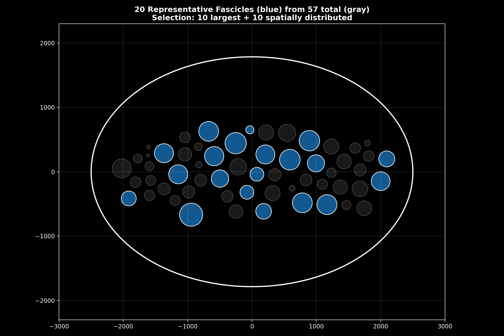
57 fascicles split into 10 sequential batches of 6 (plus a remainder of 3). Each batch builds its own FEM mesh, solves once, then sweeps 20 amplitudes using cached footprints. Batch results are merged into a unified dataset covering all fascicle positions.
Current coverage: 45/57 fascicles modeled (8 of 10 batches complete). Missing fascicles are stubbed with zeros in the merged dataset — to be filled as remaining batches finish.
Each batch models 6 fascicles (green) with perineurium boundaries, embedded in the nerve mesh with cuff electrode (red). Navigate between batches to see different fascicle groups.
No published bovine vagus histomorphometry exists. We built a geometry pipeline that transforms real pig SPARC data[1] into a realistic bovine vagosympathetic cross-section.
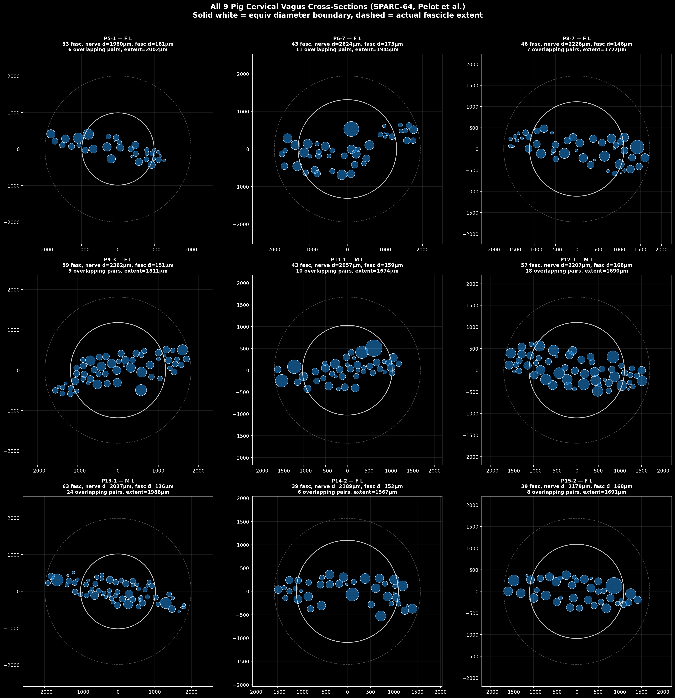
Real fascicle positions from the SPARC-64 dataset (Pelot et al.). Each panel shows a different pig cervical vagus cross-section with 33–63 fascicles, providing the morphometric foundation for our bovine extrapolation.
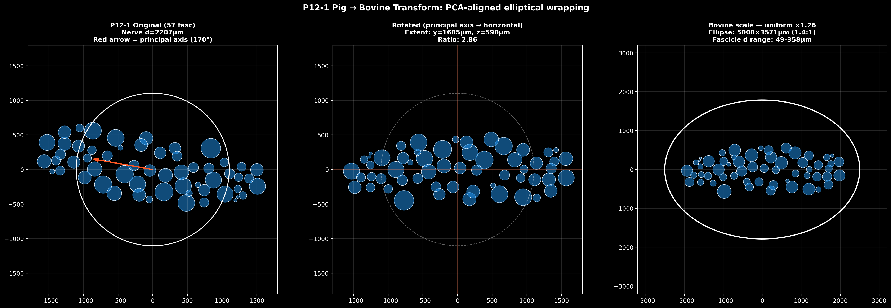
We take a representative pig sample (P12-1, 57 fascicles), rotate it to PCA-aligned axes, then apply uniform ×1.25 scaling with elliptical wrapping (1.4:1 aspect ratio) to match estimated bovine dimensions. Fascicle diameters scale proportionally.
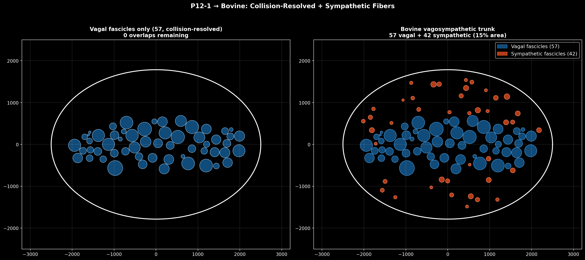
The final geometry: 57 vagal fascicles (blue) + 46 sympathetic fascicles (orange), distributed throughout the trunk — not segregated — reflecting the fused vagosympathetic anatomy unique to ruminants. This interleaving is the core selectivity challenge.
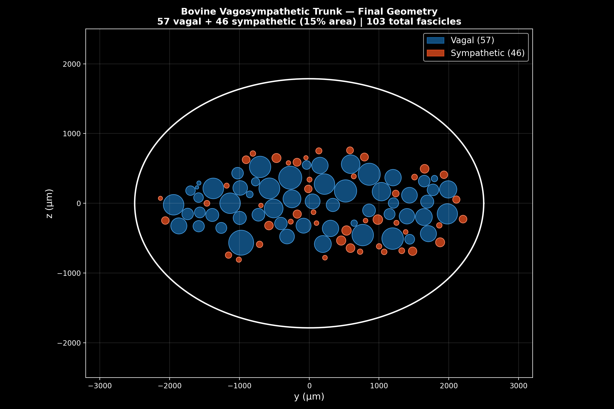
Each fascicle contains a mixed population: 85% vagal fibers (myelinated A/B + unmyelinated C) and 15% sympathetic C-fibers[2]. Fiber diameters follow Ochoa distributions for vagal and uniform 0.3–1.2μm for sympathetic. This means selective stimulation must work at the fiber type level, not just spatial targeting.
50 fibers per fascicle × 57 fascicles = 2,850 individually modeled axons in the full simulation. Each runs a biophysical cable model (MRG for myelinated, Rattay-Aberham for unmyelinated) with NEURON.
Interactive model of the 57-fascicle bovine vagosympathetic trunk. Each fascicle contains mixed vagal (85%) and sympathetic (15%) fibers — the orange core represents the sympathetic fraction. Field and recruitment use analytical point-source approximations; real FEM results are shown in the sections below.
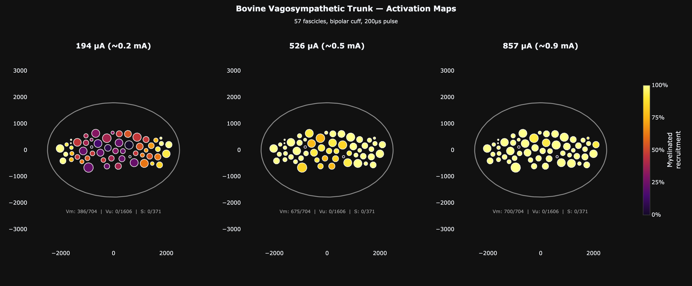
Merged FEM results across 45 fascicles at three amplitude levels. At 0.2 mA only the largest myelinated fibers recruit. By 0.5 mA the therapeutic window opens — vagal myelinated fibers activate while sympathetic C-fibers remain inert. At 0.9 mA near-complete myelinated recruitment is achieved.
Each circle is one fascicle, colored by myelinated recruitment fraction. Size reflects fascicle diameter. Data from 8 completed FEM batches (6 fascicles each), merged into a unified 57-fascicle dataset.
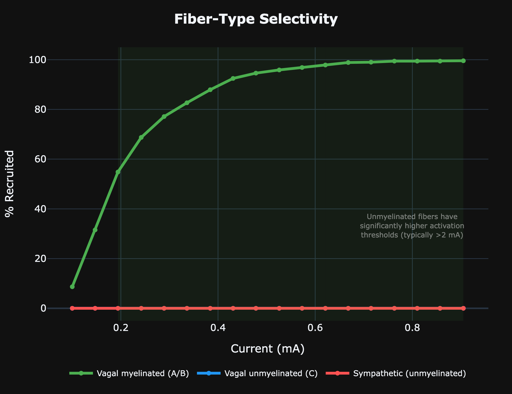
As expected from biophysics: vagal myelinated fibers (green) recruit rapidly from 0.1–0.5 mA while unmyelinated C-fibers and sympathetic fibers remain at 0% across the entire amplitude range[4]. Unmyelinated thresholds are >2 mA — fiber-type selectivity is guaranteed by the diameter/myelination gap, not electrode design.
This confirms the therapeutic window exists. The real engineering challenge is spatial selectivity — targeting specific fascicle groups within the nerve. See Electrode Comparison for the η metric that quantifies this.
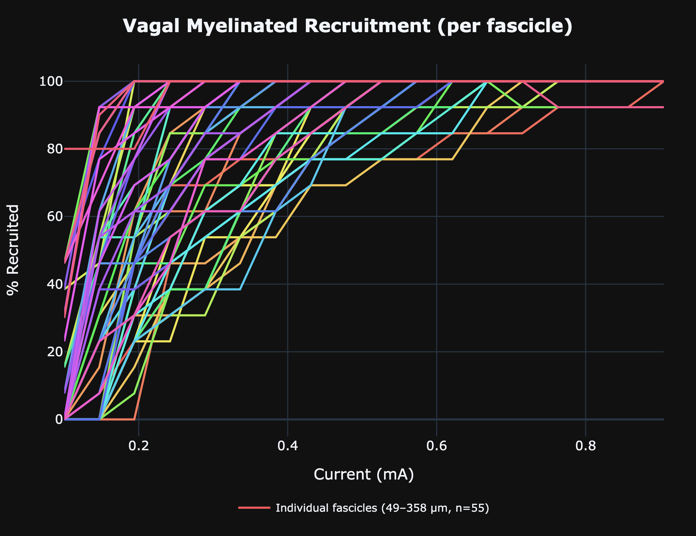
Each colored line is one fascicle (n=55 with nonzero myelinated fibers). The spread shows how recruitment varies with spatial position — fascicles closer to the electrode contacts recruit at lower currents. Despite this variability, all fascicles reach >80% recruitment by 0.6 mA.
This variability is what makes electrode configuration design critical: current steering can shift which fascicles recruit first, enabling spatial targeting of specific vagal branches.
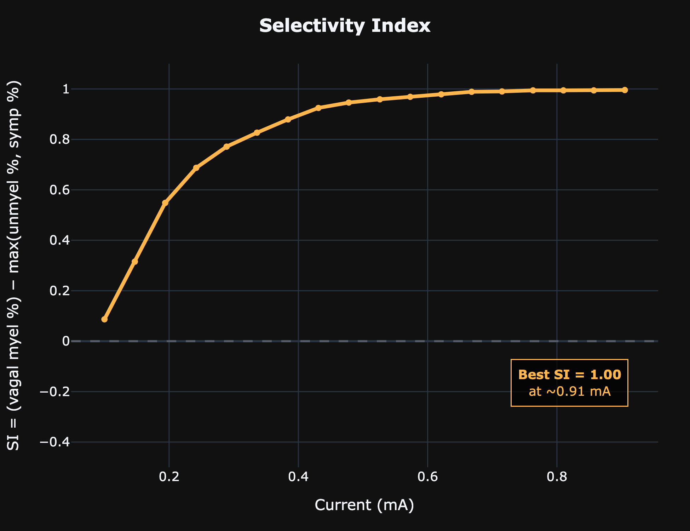
SI = (vagal myelinated %) − max(unmyelinated %, sympathetic %). Peaks at SI ≈ 1.0 at ~0.91 mA — meaning near-complete myelinated recruitment with 0% off-target activation. However, SI is trivially high here because unmyelinated thresholds are >2 mA — fiber-type selectivity is a biophysical given, not an engineering achievement.
The non-trivial result is spatial selectivity: can we target specific fascicle groups? Our electrode comparison shows that current steering achieves η = 0.85 — a meaningful metric that depends on electrode design, not just fiber physics.
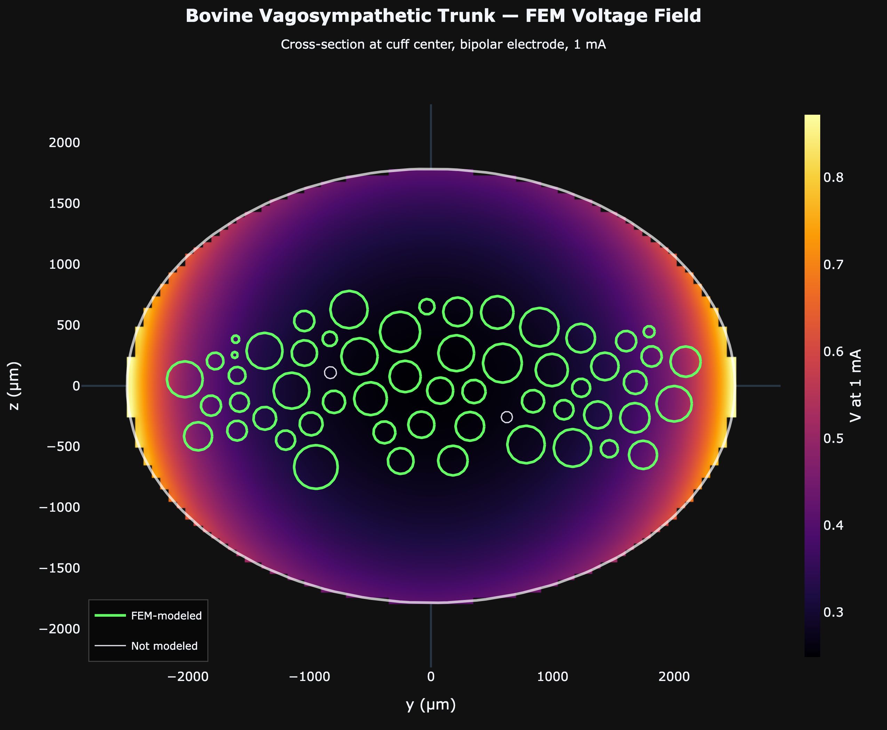
Cross-section of the solved voltage field at the cuff center (bipolar electrode, 1 mA). The field concentrates near the electrode contacts and attenuates through the epineurium. Green outlines mark the 45 FEM-modeled fascicles; white outlines show the 12 positions awaiting batch completion.
This is the raw FEM output that drives recruitment. Each fascicle’s perineurium (0.0009 S/m vs. endoneurium 0.571 S/m) creates a ~600× conductivity barrier, shielding interior fibers and creating the spatial selectivity gradient.
57 fascicles rendered as cylinders along the nerve length, colored by myelinated recruitment at 0.4 mA. Cuff electrode ring shown in red. Drag to rotate, scroll to zoom.
Current steering with multi-contact cuffs achieves 5× lower activation thresholds and spatial selectivity η = 0.85 compared to η = 0.62 for standard bipolar. We compared bipolar (2 rings), 4-contact, 8-contact, and 16-contact steered configurations using per-contact FEM basis fields with linear superposition.
| Configuration | Contacts | 50% Threshold | ηmax | η Best Amplitude | Efficiency |
|---|---|---|---|---|---|
| Bipolar (2 rings) | 2 | ~0.95 mA | 0.62 | ~1.00 mA | baseline |
| 4-contact steered | 4 | ~0.19 mA | 0.83 | ~0.15 mA | 5× |
| 8-contact steered | 8 | ~0.19 mA | 0.85 | ~0.19 mA | 5× |
| 16-contact steered | 16 | ~0.24 mA | 0.85 | ~0.15 mA | 4× |
η = spatial selectivity (target 6 fascicles vs remaining 51). Efficiency = bipolar threshold / steered threshold.
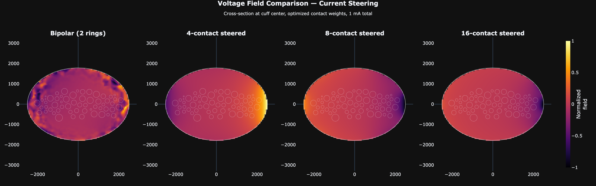
Cross-section voltage fields at cuff center (1 mA total, optimized contact weights). Bipolar spreads current uniformly; multi-contact steering concentrates the field on target fascicles. The 8-contact configuration achieves the best spatial focusing with practical contact counts.
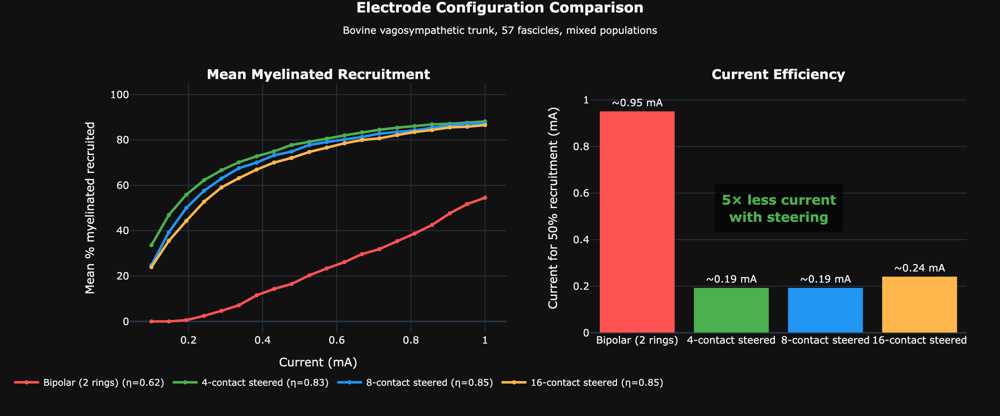
Left: mean myelinated recruitment vs. current (legend shows ηmax per config). Steered configurations reach 50% recruitment at ~0.19 mA compared to ~0.95 mA for bipolar — a 5× reduction in required current. Right: current for 50% recruitment across all configs.
Lower current means longer battery life, less tissue heating, and reduced off-target activation. All configurations use the same total current — steering just focuses it where needed.
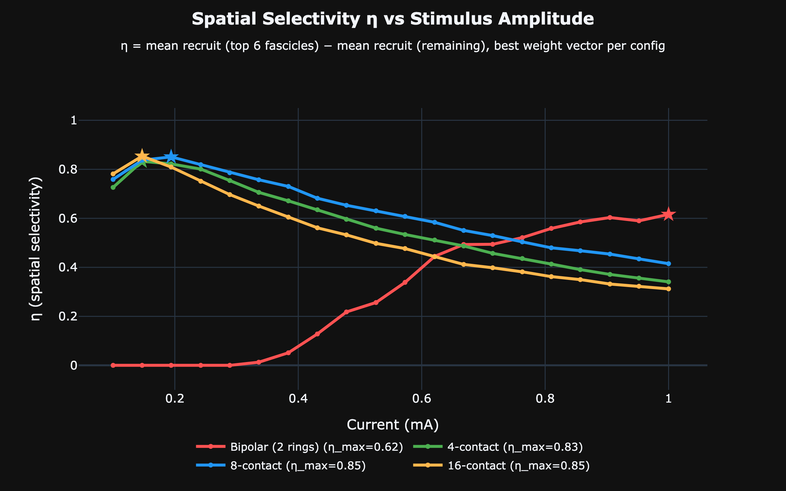
Spatial selectivity drops as amplitude increases — at high currents, all fascicles recruit regardless of steering. The steered configurations maintain η > 0.6 up to ~0.4 mA, while bipolar only reaches peak η at 1 mA when most fascicles are already saturated. The optimal operating point is the starred peak of each curve.
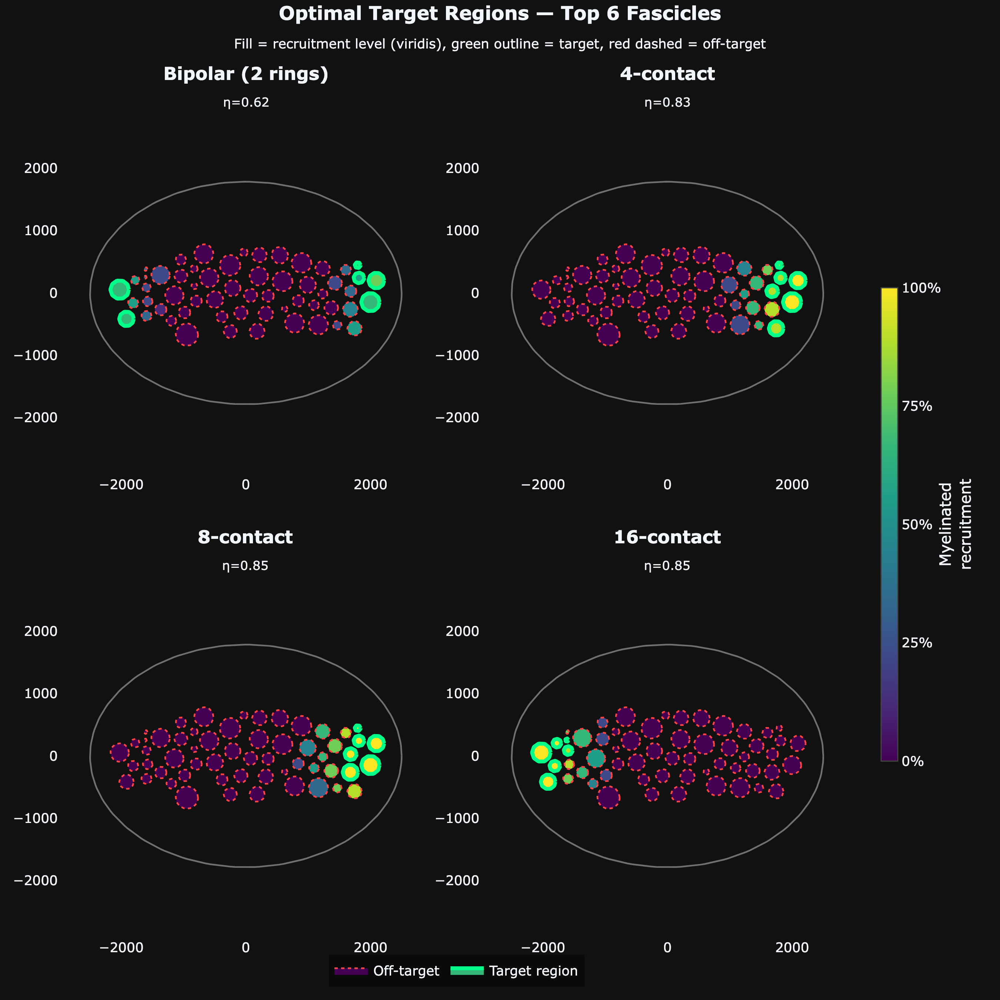
Per-fascicle recruitment at each configuration’s best η operating point. Green outlines mark the 6 target fascicles; red dashed outlines are off-target. Fill color (viridis) shows myelinated recruitment fraction. Bipolar activates broadly with poor contrast; steered configs achieve sharp on/off targeting of specific fascicle groups.
The cholinergic anti-inflammatory pathway (CAP)[5] operates via B-fiber efferents → celiac ganglion → splenic nerve → α7nAChR on macrophages → ↓TNF-α. A parallel A-fiber afferent pathway via the NTS provides additional anti-inflammatory tone. Both pathways are activated by non-selective stimulation.
B-fiber efferents in the dorsal/ventral vagal trunks project to the enteric nervous system. Cervically, these are interleaved with cardiac and laryngeal efferents. Subdiaphragmatic placement bypasses the selectivity problem entirely — GI fibers are already spatially segregated at that level.
Eructation is a coordinated brainstem reflex driven by a medullary CPG. Open-loop stimulation can modulate frequency but cannot trigger on-demand eructation. Pre-slaughter stress reduction via vagal tone enhancement is more tractable and couples naturally with anti-inflammatory activation.
A miniaturized implantable nerve cuff with integrated stimulation ASIC, neural recording front-end, and wireless telemetry — designed for sub-$50 per-head cost at scale.
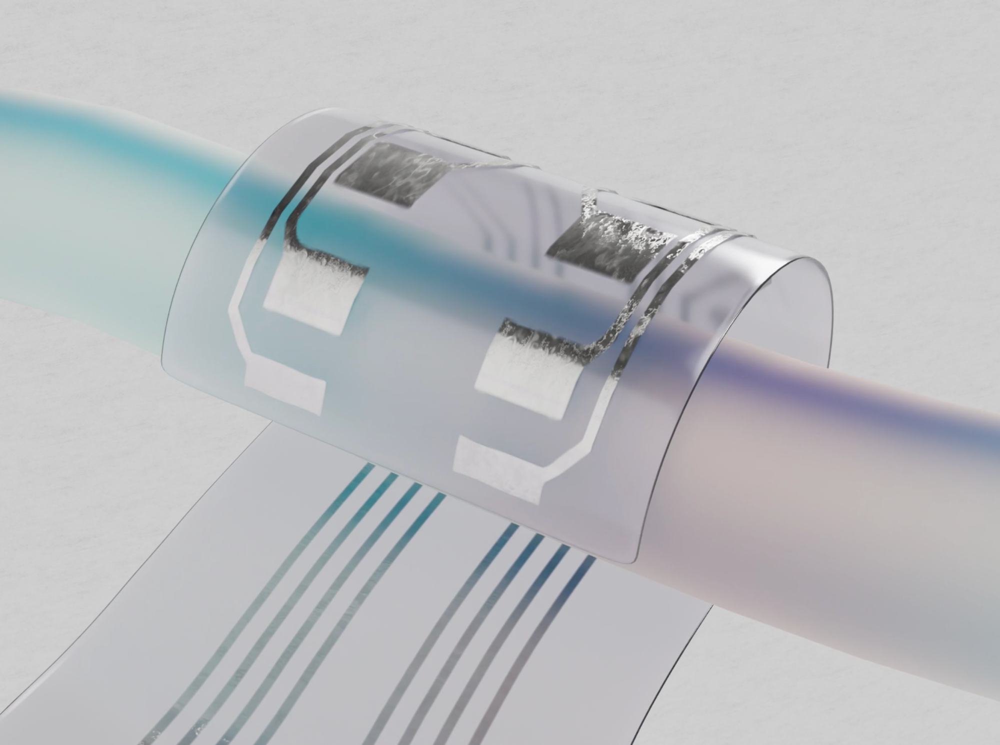
Flexible polymer substrate with patterned Pt-Ir contacts wraps around the cervical vagosympathetic trunk. The multi-contact design enables the current steering demonstrated in our electrode comparison — achieving 5× lower thresholds and η = 0.85 spatial selectivity versus standard bipolar rings.
Contact layout matches our 8-contact FEM-optimized configuration. Thin-film leads minimize tissue displacement.
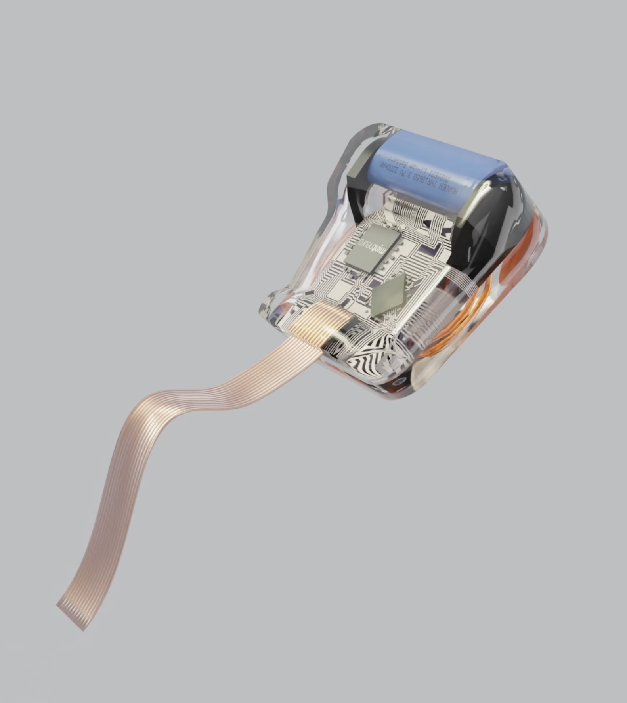
The complete device: MintNeuro stimulation ASIC, analog front-end for neural recording, nRF52840 BLE microcontroller, and primary lithium battery in a biocompatible silicone/parylene encapsulation. Flexible lead connects to the nerve cuff.
Target BOM: <$50 at volume. Surgery time: 30–60 min under local anaesthesia. Battery life: ~1 month with continuous neural recording + intermittent stimulation.
There is no internal measurement system and no unified platform integrating these signals. A device that can both sense and stimulate could command higher value — potentially doubling willingness to pay.
Beef Cattle Technical Consultant — Elanco Animal Health
17 years across Bayer, Merial & Elanco
BRD is the most common infectious disease in cattle, affecting tens of thousands of animals per year. The standard response is risk-based metaphylaxis — treating entire loads with antibiotics to suppress outbreaks — because identifying sick individuals early is so difficult.
The damage mechanism is a runaway immune response: neutrophilia in the lung, not just the bacteria. BRD is multifactorial — pathogen, stress, nutrition, and immune state all interact. A cow’s respiratory system is disproportionately small relative to body size, making recovery harder.
Animals are treated that don’t have BRD. Others develop BRD, go untreated, and reveal lung lesions only at slaughter. In FDA licensure studies, saline-placebo animals sometimes recover on their own — underscoring how imprecise current clinical diagnosis is. Pen riders, ear tags, rumen boluses, and accelerometers are all external or imprecise. Ultrasound is the most validated but still not reliably predictive in feedlot beef.
Cost is the hard ceiling. A diagnostic must come in below the cost of a treatment — around $20/head for diagnosis alone. A device that can both sense and stimulate commands higher value: Dr. Tessman indicated a $60/head threshold for a combined sensing-and-stimulation solution. Any system must be cheaper across the entire herd, not just the treated subset.
How we built a selective VNS simulation framework in a weekend.
Comprehensive literature review of bovine vagus anatomy, fiber composition, activation thresholds, and EIT-guided selective stimulation. Key finding: zero published bovine histomorphometric data exists — every parameter must be extrapolated from pig or treated as a sweep variable.
Designed a 7-stage pipeline: geometry generator → FEM solver → cable model → recruitment computer → selectivity scorer → parameter optimizer → sensitivity analysis. Built with NRV (Neuron Response Vue) and NEURON simulator backend.
Generated synthetic nerve geometry, computed extracellular potentials, and ran threshold searches across all fiber types. Produced recruitment curves demonstrating a clear therapeutic window for selective B-fiber activation.
Sourced and dissected sheep/goat cervical anatomy to validate surgical approach and identify the vagosympathetic trunk, carotid artery, and jugular vein in their true spatial relationship.
Designed closed-loop architecture: VNS cuff electrode + analog front-end + ADC for neural recording, with ultrasound-guided feedback for real-time stimulation protocol optimization.
The entire simulation pipeline — from SPARC pig morphometry to merged 57-fascicle recruitment curves — was built and run during the hackathon. Total compute: ~3 hours across 10 batches on a Mac M2 Max (64GB). The NRV + NEURON + DOLFINx stack[4] made it possible to go from raw anatomy data to biophysically validated recruitment curves in a weekend.